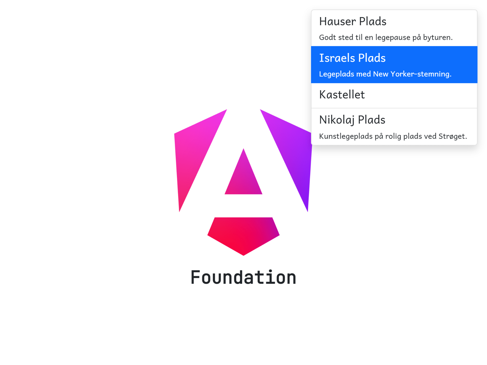

Before we create an output from the sidebar component, mark the playground that is clicked on, using the CSS class active.
To do this we will add a click event listener to the <li> element. When clicked, it should invoke a method called selectPlayground. This method sets the state of a signal called selectedPlayground with the playground value.
Using property data binding, set the <li> element CSS class to active, when the selected playground is equal the playground in the @for loop.
Hint: [class.active] = "???"
